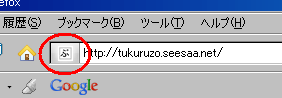
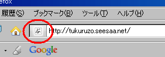
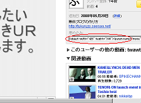

無料ブログにファビコンを作成する際の作り方について記事を書こうって思います。
ファビコン自体の作り方はわりと簡単ですが、ＩＥやファイアーフォックスでの表示のされ方に違いがあるようです。
ファビコンとはブラウザで表示されるこんなやつです。

無料ブログにファビコン作り方の続き「初心者簡単な作り方」の記事一覧です。主に、ブログの作り方や作成方法の情報を更新してます。そのほか、Seesaa blog のカスタマイズ方法やアフィリエイト情報、ホームページ作成方法なども、、
無料ブログにファビコンを作成する際の作り方について記事を書こうって思います。
ファビコン自体の作り方はわりと簡単ですが、ＩＥやファイアーフォックスでの表示のされ方に違いがあるようです。
ファビコンとはブラウザで表示されるこんなやつです。

無料ブログにファビコン作り方の続き無料ブログのブログなんで、有料ブログについて書くのもなんですが、有料ブログのいいところをちょっと考えてみたいと思います。
というのも、有料ブログでひとつブログを作成してみようと思っているからなんです。
有料ブログといっても、ＭＴとかの独自ドメインでレンタルサーバーの有料ブログっていうのじゃなくて、キャンセル有の有料ブログのことです。
ＭＴとかでブログを作成した場合は、やっぱ、ドメインとかレンタルスペースとかずっと借り続けなきゃなんないんで、その効果のほどはどうなんだろうって思います。
コストを考えると、キャンセル有の有料ブログでブログを作成した方がいいかなって思うんです。
無料ブログを広告非表示にしての有料ブログ化の続き最近はこのブログにユーチューブ動画を貼りまくってます。
シーサーブログにユーチューブ動画を貼る方法はとっても簡単です。
まず、ユーチューブで貼りたい動画のタグをもらってきます。

動画によってはタグを公開していない動画もありますが、こんなタグがあるのはコピペで簡単にタグを取得することができます。
それを自分のブログの記事に貼り付けるだけで表示されます。
無料ブログにユーチューブ動画貼る方法の続き最近、自分のブログの記事なんかでちょっと疑問に思うことがあるのですが、ブックマークってやっぱ自分でブックマークするのはどうなんだろうって思ってます。
ブックマークが実際に効力をあらわすのはたぶん、５つぐらいめからだと思うんで、自分でひとつぐらいはブックマークしといてもいいのかなって思うんです。
何かのきっかけになればいいかなって感じで、ひとつぐらいはいいかなって思うんです。
自分のブログ記事をブックマークの続きシーサーブログでカテゴリ登録というのが最近できたようです。登録してランキング上位に表示されると被リンクなんかがもらえるみたいです。

わたしも何気に登録しておいたんですが、意外に登録していない人が多いようで、まだの方は「ブログ設定 - カテゴリ」の箇所で選択して、自分のブログコンテンツに合う場所に設定しておくといいと思います。
カテゴリーによっては、登録数が20ぐらいのところもあるようなんで、１位になることも可能なんじゃないかなって気がします。
シーサーブログカテゴリ登録の被リンク効果の続き